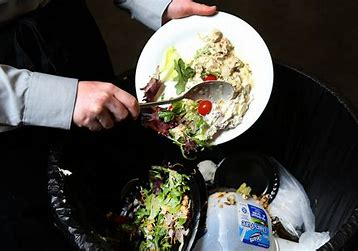
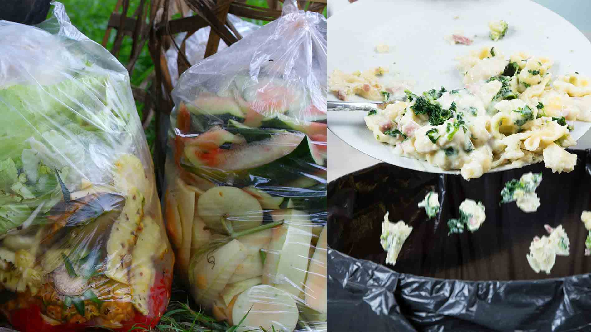
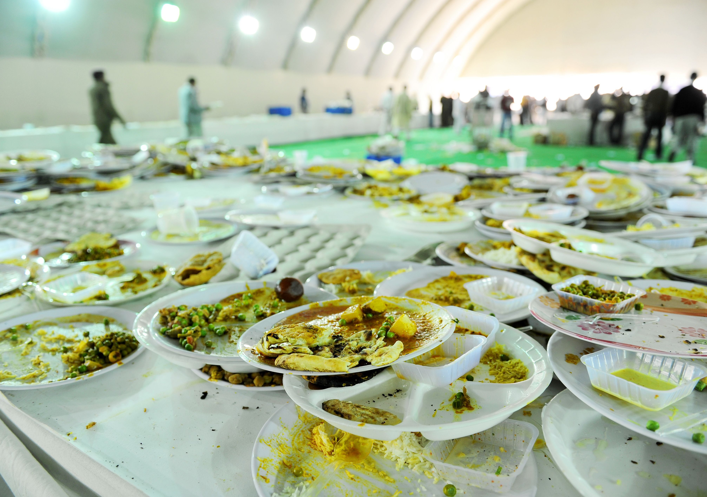

Got it! Here's the updated HTML content with the entire text replaced with relevant alternatives while maintaining the same meaning:
```html
EcoBite | Contributing Towards Food Conservation

EcoBite
"Saving food is preserving life." – EcoBite Slogan
Food wastage encompasses any edible items that are disposed of instead of consumed. This includes unused food, spoiled items, and excess trimmings from food preparation.
Types of Food Wastage:
1) Excess Fruits and Vegetables 2) Discarded Beverages 3) Surplus Fish, Meat, and Poultry 4) Unused Sugar Products 5) Excessive Dairy Items 6) Unnecessary Mineral Consumption 7) Leftover Oil Residues
Here are some illustrations depicting food wastage from various settings.


Exploring Food Conservation Methods
Food conservation practices aim to minimize the quantity of food disposed of by households and businesses. These methods typically involve strategies such as composting, recycling, and anaerobic digestion. Moreover, food conservation endeavors often include educational campaigns to increase awareness about the environmental repercussions of food wastage. Such initiatives may also necessitate infrastructural enhancements, such as the introduction of efficient collection systems for segregating and properly managing food wastage. On a daily basis, food establishments discard substantial amounts of high-quality, delectable food. This may include batches of fresh produce that don't meet aesthetic standards, or surplus milk ordered for school cafeterias. Consequently, food that could nourish people instead ends up in landfills. In India, grand-scale events like weddings often result in significant food wastage. Nevertheless, restaurants and hotels also contribute to this issue. Nearly 14% of the global food supply is lost between harvest and retail stages. India alone contributes approximately 68.8 million tons of wasted food annually, which constitutes 7% of the global total, according to the United Nations Environment Programme's Food Waste Index Report 2021.
This is where EcoBite comes into play. Our initiative strives to minimize food wastage and combat hunger through responsible consumption and production. We operate across various regions and collaborate with events and venues to collect surplus food and redistribute it to those in need.
Effective Strategies for Food Waste Management
Here are some effective steps to reduce food wastage:
1) Buy only what you need and plan meals ahead.
2) Compost food scraps to create nutrient-rich soil.
3) Donate excess food to shelters and food banks.
4) Recycle food packaging materials.
5) Innovatively utilize leftovers in new recipes.
6) Explore local food waste programs and initiatives.
Solutions for food waste management in India:
1)Composting: Implement composting strategies to effectively manage organic waste and produce valuable compost.
2)Animal Feed: Repurpose food waste as animal feed, contributing to recycling efforts.
3)Product Creation: Utilize food waste to create useful products such as biofuels and fertilizers.
4)Source Reduction and Donations: Minimize waste by reducing excess production and donating surplus food to those in need.
Together, We Can Make a Difference
We are committed to addressing food wastage, but we need your support. In addition to food donations, there are various ways you can contribute to our cause.
Click here to learn about global food wastage statistics for 2019. To gain insights into food waste management, consider reading these books:
1) "Food Waste Management: Principles and Practices" by Ram K. Vashist, Neelam Dhingra
2) "Achieving Zero Food Waste: Strategies and Solutions for Food Service and Retail Operations" by Andrew Shakman and Martin K. Law